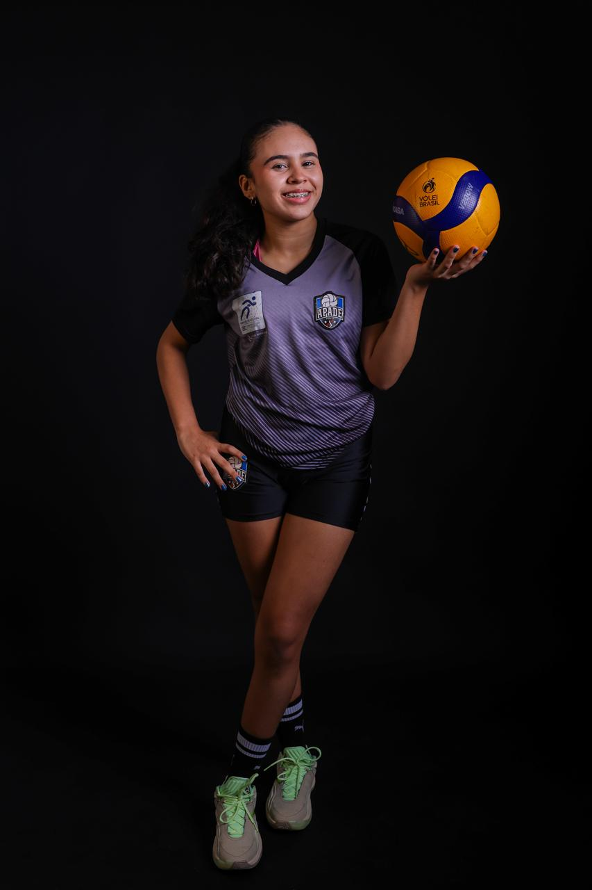

Visão de jogo
Leitura rápida para distribuir as jogadas e potencializar cada atacante.
Voleibol • Levantadora
Visão de jogo, intensidade e liderança para transformar cada levantamento em uma nova possibilidade de ataque.

Perfil da atleta
Maria Valentina começou no voleibol ainda criança e encontrou na posição de levantadora o espaço ideal para unir técnica, estratégia e espírito coletivo.
Seu primeiro contato com a modalidade aconteceu em 2019, no Clube AABB. Em 2022, foi aprovada em seletivas para categorias de base e escolheu defender a APADE, clube pelo qual é federada e participa de competições estaduais e nacionais.
Também integra a equipe de voleibol do Colégio Santa Rosa. Em sua trajetória, acumulou títulos em diferentes categorias e reconhecimentos individuais como melhor levantadora e melhor atleta da partida.
Leitura rápida para distribuir as jogadas e potencializar cada atacante.
Compromisso com treino, fundamentos e desenvolvimento competitivo.
Comunicação, presença e confiança para conectar a equipe dentro da quadra.
Trajetória
Cada temporada acrescenta repertório, experiência e novas metas a uma carreira construída coletivamente.
Início no voleibol como aluna do Clube AABB.
Aprovada nas seletivas, passa a integrar as categorias de base e torna-se atleta federada.
Títulos estaduais e nacionais, experiências em várias categorias e premiações individuais.
Mais aprendizado, desafios e oportunidades para elevar o nível do jogo.
Dentro das quatro linhas
Conheça os campeonatos, colocações e reconhecimentos individuais da atleta.
Explorar conquistas